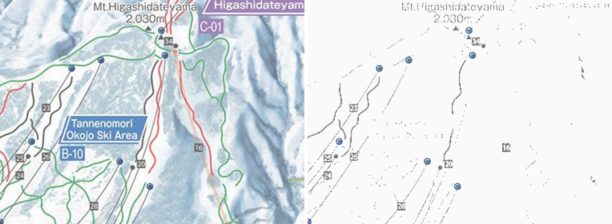

1
Control points
The painting marks every lift’s bottom and top station with a black dot or triangle. Those, plus labelled summits, are the features that can be located exactly in both the image and map data.
- Detect
- Dark ink with the label text removed, opened and filtered by size: 86 candidate markers.
- Match
- Paired by hand to OpenStreetMap lift ends using the painted lift numbers: 79 lift ends (69 from detected markers, 10 read off the image by hand) plus 9 peaks from the painted ▲, 88 pairs of ground point
(x, y, z)↔ pixel(u, v). Ground heights come from the GSI (Geospatial Information Authority of Japan) 1 m DEM.
